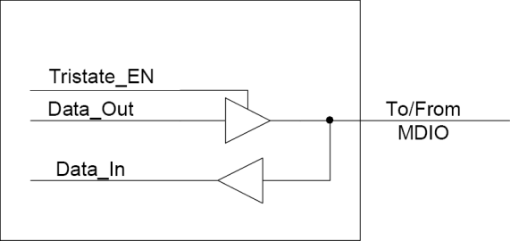
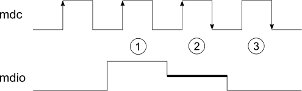
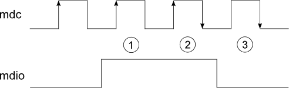
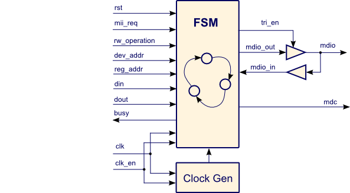
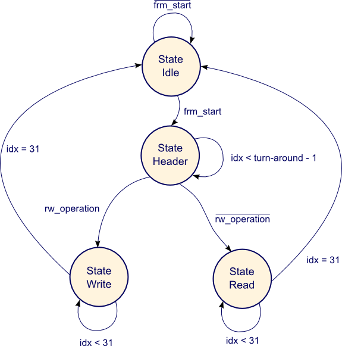
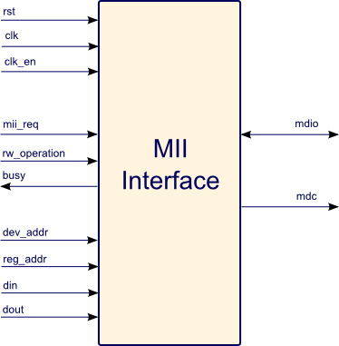

This component is loosely based on the IEEE Draft P802.3u MII Management Interface standard.
At the rising edge of rst, the MII standard device loads the device address into the REGISTER ADDRESS and uses it to decode accesses to its registers. After a power-on reset, the MII specification defines a set of thirty-two 16-bit status and control registers. The frame is formatted as follows (in bit order across MDIO)
| Start of Frame | Operation Code | Device Address | Register Address | Turn-Around | Data | Idle | |
|---|---|---|---|---|---|---|---|
| Read | 01 | 10 | AAAAA | RRRRRRRR | Z0 | DDDDDDDDDDDDDDDD | Z |
| Write | 01 | 01 | AAAAA | RRRRRRRR | 10 | DDDDDDDDDDDDDDDD | Z |
The figure bellow shows the driver configuration implemented in this programmable logic description. Note that data output turn to tri-state mode when the module is in read mode. This action is executed by the logic being it not crontroled by user.

Start of frame: Start of frame is indicated by 01 pattern.
Operation code: The operation code field indicates the type of transaction being performed by the frame. A 01 pattern indicates that the frame payload contains data to be written to the register. A 10 pattern indicates that the frame payload will contain data to be read from the register.
Device Address: The device compares the address bits of the device address field to the latched address bits. If they are equal, the device proceeds with the access. If they are not equal, the device ignores the access and does not drive the mdio signal.
Register address: This field is used to select the registers to be accessed. The register address 8 bits.
Turnaround: This field between register address field and data field is used to avoid contention on mdio.
Data field: This field has 16 bits (MII standard) width but its contents is configurable by generics. When a smaller data width is chosen, the MSBs is driven to '0' and the written word is placed in the LSBs. The first bit transmitted is bit 15. Data bits are latched in or out of the MII device on the rising edge of mdc* for write operation and falling edge of **mdc for read operation.
Idle condition: A final clock puts mdio back in an idle state (mdio is tri-stated and pulled-up). Thus in the idle state all the drivers are disabled and the MII bus is in the high impedance state. The MII device bus requires idle state for 1 clock period.
NOTE: Some devices needs more the one mdc clock periods in idle state, in contrast to the IEEE Draft P802.3u that requires idle state for one clock periods.
The figure bellow shows the functional timing for the turn around (TA) portion of a read access. The arrows on the clock edges indicate which edge is used by the MII device for each event. The MII device clocks data in on mdc's rising edge and clocks data out on mdc's falling edge.

IMPORTANT: For a read transaction, the mdio should be in a tri-state for the first part of the turn around. The device drives a zero during the second part of the turn around. The figure bellow shows which clock edges are being used for the turn around during the read operation.
For a write transaction, the system will drive a '1' for the first bit time, and a '0' for the second bit time of the turn around. Look at figure bellow for which clock edges are being used for the turn around during the write operation.

The figure above shows the functional timing for the turn around (TA) portion of a write access. The arrows on the clock edges indicate which edge is used by the MII device for each event. The data is clocked in the MII device on the mdc's rising edge.


dkasdpas

| Generic | type | Description |
|---|---|---|
| CLK_EDGE | std_logic | Defines sensible edge of the mii interface driver |
| MASTER_CLK_DIV | integer | Indicates master clock division to generate fsm clock |
| ST_WR | std_logic_vector | Defines pattern to start a write frame |
| ST_RD | std_logic_vector | Defines pattern to start a read frame |
| CODE_WR | std_logic_vector | Defines write code pattern |
| CODE_RD | std_logic_vector | Defines read code pattern |
| TURN_AROUND_WR | std_logic_vector | Defines turn-around code to write action (sended) |
| TURN_AROUND_RD | integer | Defines turn-around position in read action |
| DEV_ADDR_WIDTH | integer | Defines device address width |
| REG_ADDR_WIDTH | integer | Defines register address width |
| DATA_WIDTH | integer | Defines data width with uPC |
| DATA_COM_WIDTH | integer | Defines data width of MII interface |
| DATA_STUFF | integer | Defines stuff word width |
| TXBUS_EDGE | std_logic | Indicates Tx clock edge of MII interface |
| RXBUS_EDGE | std_logic | Indicates Rx clock edge of MII interface |
| OPTIMIZATION | string | Inicates how optimization is used (not implemented yet) |
| Port | Orientation | type | Description | Data Size (bits) |
|---|---|---|---|---|
| rst | in | std_logic | Resets the MII interface module | 1 |
| clk | in | std_logic | Clock of MII interface module | 1 |
| clk_en | in | std_logic | Clock enable of MII interface module | 1 |
| mii_req | in | std_logic | Commands start frame transmition | 1 |
| rw_operation | in | std_logic | Indicates how operation will be made 0: Read 1: Write |
1 |
| busy | out | std_logic | Indicates to uPC interface the status of MII interface module. 0: Free 1: Busy |
1 |
| dev_addr | in | std_logic_vector | Defines address of device to be accessed | DEV_ADDR_WIDTH |
| reg_addr | in | std_logic_vector | Defines address of register to be accessed | REG_ADDR_WIDTH |
| din | in | std_logic_vector | Input data (uPC interface to MII interface) | DATA_WIDTH |
| dout | out | std_logic_vector | Output data (MII interface to uPC interface) | DATA_WIDTH |
| mdc | out | std_logic | Clock of MII interface | 1 |
| mdio | inout | std_logic | Data line of MII interface | 1 |
Here is presented two simple example of write and read communication with MII interface module.
In the picture above is presented a write communication whit MII interface module. Note that the first two bits is a start frame indication, after came anothers two bits that indicates the read/write operation, in this case a write operation. The next field in MII frame is the device address followed by register address. Then thera a two bits that indicates turn-around (for this example these bits are "10"). The data came in the next useful field and the last field is a ilustration of the idle MII bus condition.
The picture above shows a read communication whit MII interface module. Note that the first two bits (start frame) is equal the first two bits of write communication frame. The read/write operation field has a read pattern, and the device and register addresses is the same as showed in write frame comunication, but the turn-around field has a read turn-around patters ("1Z"). The following fields are equal as the write frame communication, the difference is in the clock edge that register data, that inverts in read turn-around.
IEEE Draft P802.3u